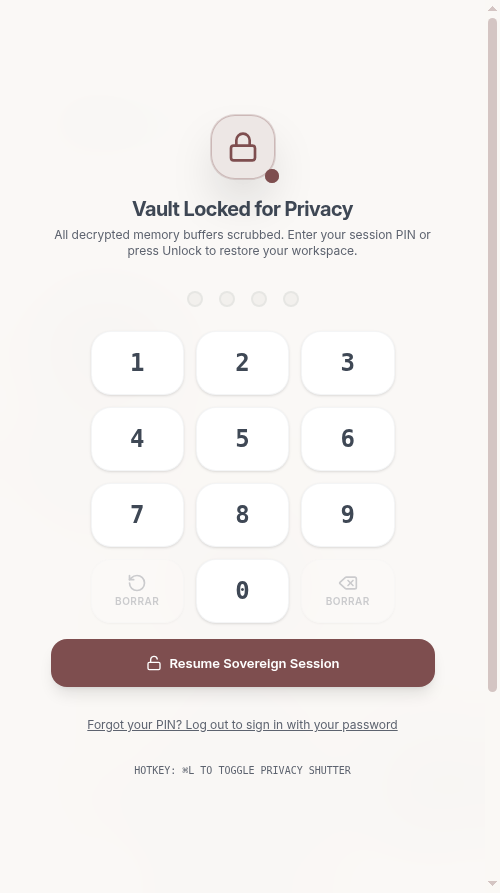
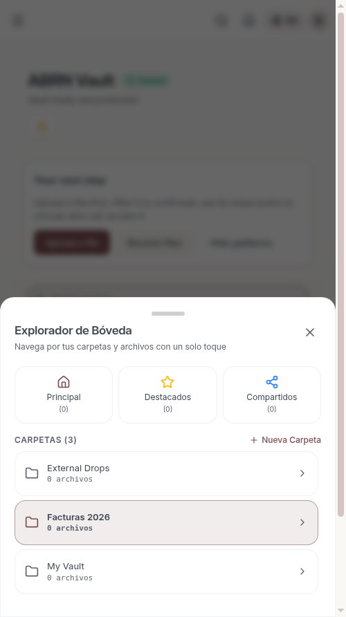
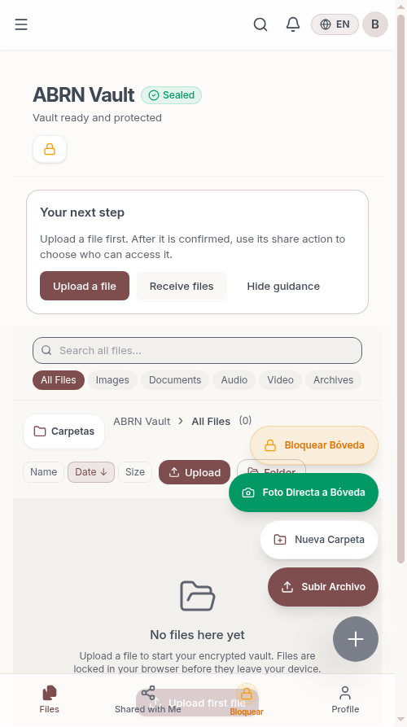
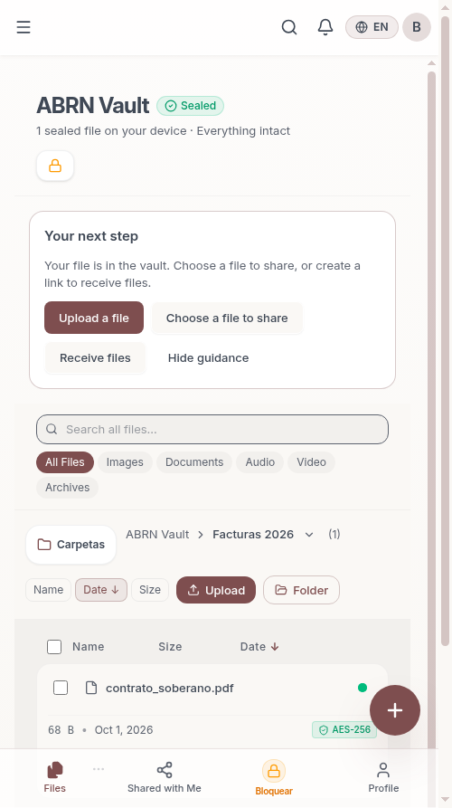

Auditoría, Rediseño Ergonómico y Hardening Móvil bajo las 7 Leyes del Barrio · Servidor Local LAMP
| Pilar / Paso | Objetivo Ergonómico | Implementación | Resultado |
|---|---|---|---|
| 1. Ergonomía de Pulgar | Bloqueo de pánico en el 40% inferior | Botón "Bloquear" en BottomNav y FAB con hápticos y cerrojo |
PASSED |
| 2. Tarjetas Táctiles | Eliminar usuario móvil ciego (tamaño/fecha) | Sublínea móvil visible con bytes, fecha, sello AES-256 y 44px targets | PASSED |
| 3. Dialpad Soberano | Cero brincos de teclado virtual en PIN | Keypad táctil 4x3 SovereignPinPad con auto-unlock en 4to dígito |
PASSED |
| 4. Cámara a Bóveda | Cero fugas de fotos sin cifrar en galería | Direct-to-vault camera input procesado en memoria con AES-256 Web Worker | PASSED |
| 5. Explorador de Carpetas | Eliminar árbol de escritorio en móvil | MobileFolderSheet con tarjetas de 56px y contador de archivos |
PASSED |
| 6. Ley Tola & Web Share | Evidencia en <300ms y 1-tap WhatsApp | MobileProofPill y navigator.share nativo en Android/iOS |
PASSED |



